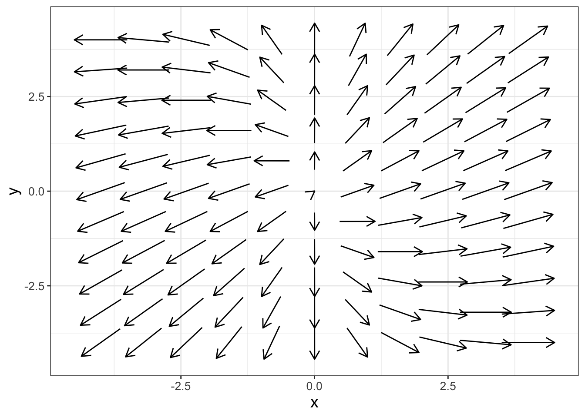
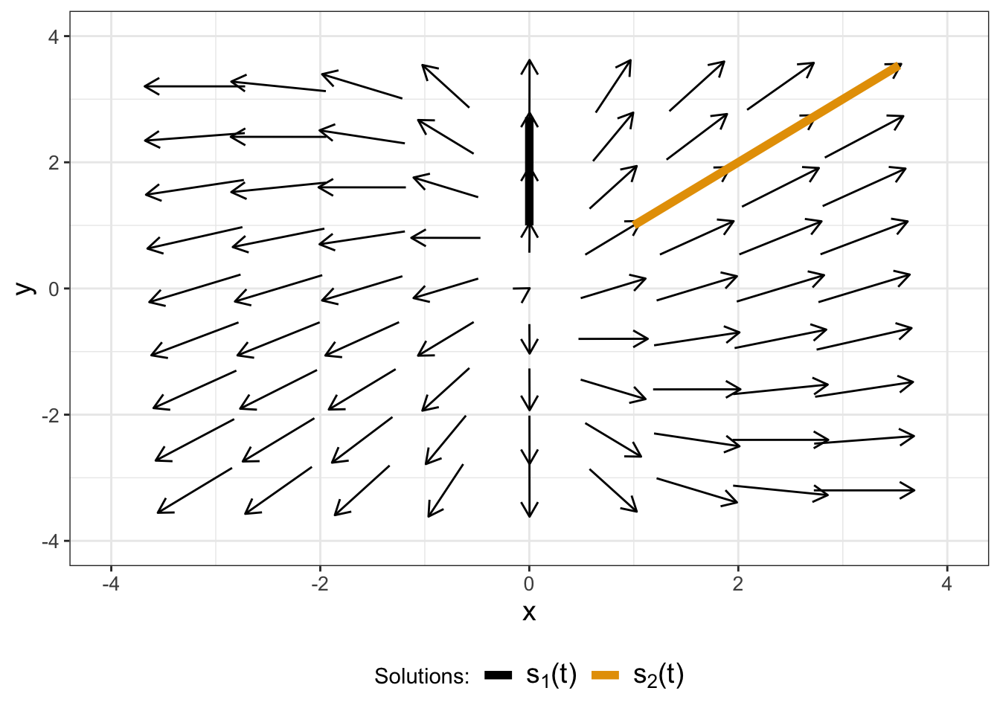
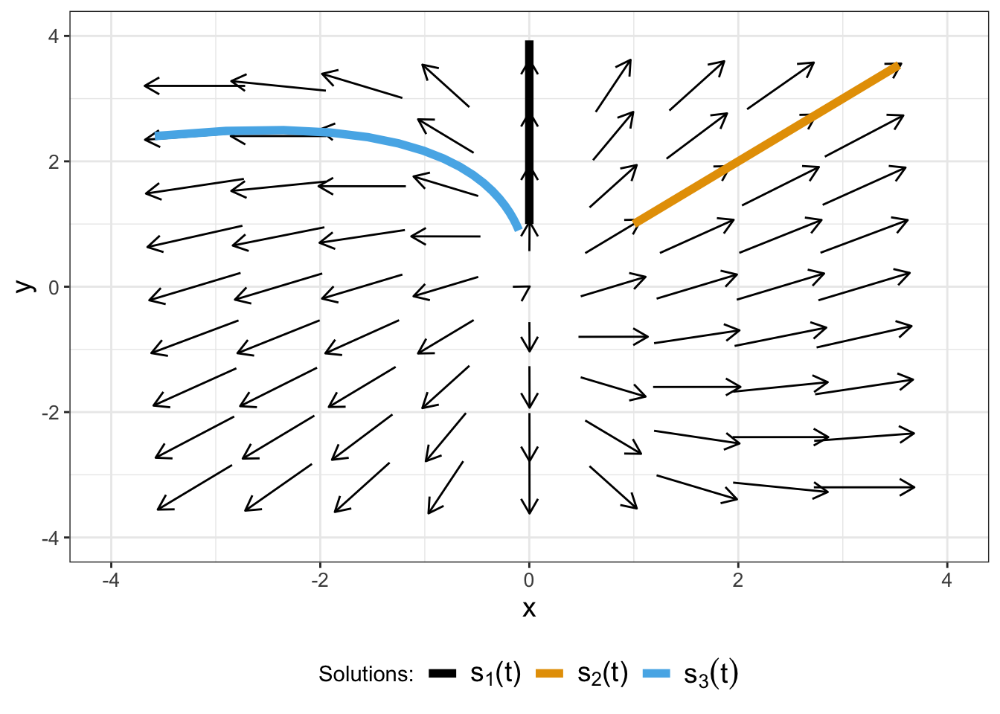

# For a two variable system of differential equations
# we need to define dx/dt and dy/dt separately:
linear_eq <- c(
dxdt ~ 2 * x,
dydt ~ x + y
)
# Now we plot the solution.
phaseplane(
system_eq = linear_eq,
x_var = "x",
y_var = "y"
)15 Systems of Linear Differential Equations
Here we delve into a deeper understanding of differential equations by examining long term stability of equilibrium solutions. As a first step, Chapter 15 focuses on linear systems of differential equations, such as Equation 15.1:
\[ \begin{split} \frac{dx}{dt} &= 2x \\ \frac{dy}{dt} &= x+y \end{split} \tag{15.1}\]
Equation 15.1 is a linear system of differential equations because it does contain terms such as \(y^{2}\) or \(\sin(x)\) on the right hand side of the equation. This chapter focuses on visualizing the phase plane for linear systems and determining the equilibrium solutions. Let’s get started!
Note
This chapter uses following libraries: ggplot2, and tibble (all part of the tidyverse) and demodelr. See Section 2.3 on how to install packages. Prior to running any code in this section, include library(tidyverse) and library(demodelr).
15.1 Linear systems of differential equations and matrix notation
Another way to express Equation 15.1 is with matrix notation:
\[ \begin{split} \begin{pmatrix} \frac{dx}{dt} \\ \frac{dy}{dt} \end{pmatrix} &= \begin{pmatrix} 2x \\ x+y \end{pmatrix} \\ &=\begin{pmatrix} 2 & 0 \\ 1 & 1 \end{pmatrix} \begin{pmatrix} x \\ y \end{pmatrix} \end{split} \tag{15.2}\]
(Note: we can also use the prime notation (\(x'\) or \(y'\)) to signify \(\displaystyle \frac{dx}{dt}\) or \(\displaystyle \frac{dy}{dt}\).) We can also represent Equation 15.2 in a compact vector notation: \(\displaystyle \frac{ d \vec{x} }{dt} = A \vec{x}\), where for this example \(\displaystyle \vec{A}=\begin{pmatrix} 2 & 0 \\ 1 & 1 \end{pmatrix}\).
Now let’s generalize. A system of linear equations:
\[ \begin{split} \frac{dx}{dt} &= ax+by \\ \frac{dy}{dt} &= cx+dy \end{split} \]
can be expressed in the following way:
\[ \begin{pmatrix} \frac{dx}{dt} \\ \frac{dy}{dt} \end{pmatrix} = \begin{pmatrix} ax+by \\ cx+dy \end{pmatrix} = \begin{pmatrix} a & b \\ c & d \end{pmatrix} \begin{pmatrix} x \\ y \end{pmatrix} \tag{15.3}\]
Equation 15.1 is an example of a coupled system of equations, mainly due to the expression \(\displaystyle \frac{dy}{dt}=x+y\). An example of an uncoupled system of equations would be \(\displaystyle \frac{dx}{dt}=3x\) and \(\displaystyle \frac{dy}{dt}=-2y\), which could be solved with separation of variables.
15.2 Equilibrium solutions
Now let’s discuss equilibrium solutions for Equation 15.1. Recall equilibrium solutions are places where both \(\displaystyle \frac{dx}{dt}=0 \mbox{ and } \frac{dy}{dt}=0\). Since \(\displaystyle \frac{dx}{dt}=2x\), an equilibrium solution would be \(x=0\). Substituting \(x=0\) into \(\displaystyle \frac{dy}{dt}=x+y\) also shows \(y=0\) is the corresponding equilibrium solution for \(y\).
For a general linear system of differential equations, it might be helpful to imagine what we should expect for an equilibrium solution. Think back to calculus - what types of functions have a derivative that equals zero? (Hopefully constant functions comes to mind!) The equilibrium solution is then \(x=0\) and \(y=0\).
Here is an amazing fact: it turns out any linear system of differential equations has the origin as its only equilibrium solution. One way to verify this fact is to examine the theory behind solutions for linear systems of equations in linear algebra. You might be wondering why there is all the fuss with equilibrium solutions - especially the origin (\(x=0\) and \(y=0\))1. So while equilibrium solutions are not a terribly interesting question at the moment, the stability of solutions is. In order to understand what I mean by stability, let’s re-examine how to generate phase planes from Chapter 6.
15.3 The phase plane
The phase plane is helpful here to understand the stability of an equilibrium solution. Remember that the phase plane shows the motion of solutions, visualized as a vector. For the system we examined earlier let’s take a look at the phase plane. Here is some R code from the demodelr package to help you visualize the phase plane for Equation 15.1, shown in Figure 15.1.2

Notice how in Figure 15.1 phaseline the arrows seem to spin out from the origin? We are going to discuss that below - but based on what we see we might expect the stability of the origin to be unstable.
15.4 Non-equilibrium solutions and their stability
Even though we have already identified the equilibrium solution for Equation 15.1, there are other non-equilibrium solutions. Here are two non-equilibrium solutions that you can verify:
- Solution 1: \(\displaystyle s_{1}(t) = \begin{pmatrix} x \\ y \end{pmatrix} = \begin{pmatrix} 0 \\ e^{t} \end{pmatrix}\)
- Solution 2: \(\displaystyle s_{2}(t) = \begin{pmatrix} x \\ y \end{pmatrix} = \begin{pmatrix} e^{2t} \\ e^{2t} \end{pmatrix}\)
These two non-equilibrium solutions can aid us in understanding the stability of the equilibrium solutions. All of the solutions contain terms that are exponential growth, indicating movement away from the equilibrium solution at \(x=0\), \(y=0\). This is even more evident when we plot the solutions with the phase plane by defining a new data frame and plotting \(s_{1}(t)\) and \(s_{2}(t)\) with geom_path (Figure 15.2):

The arrows in the phase plane of Figure 15.2 show how \(s_{1}(t)\) and \(s_{2}(t)\) move away from the solution. The phase plane suggests for Equation 15.1 that the equilibrium solution at the origin is unstable because both the arrows in both directions seem to be pointing away from the origin.
Also notice that in Figure 15.2 the solutions \(s_{1}(t)\) and \(s_{2}(t)\) in the \(xy\) plane are straight lines! It turns out that these straight line solutions are quite useful - we will study them in a later chapter.
We can also investigate stability algebraically for each solution (\(s_{1}(t)\) and \(s_{2}(t)\)). We will organize our solutions in vector format, factoring out the exponential functions in each of the expressions:
- Solution 1: \(\displaystyle \vec{s}_{1}(t) = \begin{pmatrix} 0 \\ e^{t} \end{pmatrix}= \begin{pmatrix} 0 \\ e^{t} \end{pmatrix} =e^{t} \begin{pmatrix} 0 \\ 1 \end{pmatrix}\)
- Solution 2: \(\displaystyle \vec{s}_{2}(t) = \begin{pmatrix} e^{2t} \\ e^{2t} \end{pmatrix}= \begin{pmatrix} e^{2t} \\ e^{2t} \end{pmatrix} = e^{2t} \begin{pmatrix} 1 \\ 1\end{pmatrix}\)
The vectors \(\displaystyle \begin{pmatrix} 0 \\ 1\end{pmatrix}\) and \(\displaystyle \begin{pmatrix} 1 \\ 1\end{pmatrix}\) are the lines \(x=0\) and \(y=x\), as shown in Figure 15.2. By factoring out the exponential functions we can see the straight line solutions!
To further investigate stability we investigate the long term behavior of the exponential functions that are multiplying the straight line solutions. Notice that \(\displaystyle \lim_{t \rightarrow \infty} e^{t}\) and \(\displaystyle \lim_{t \rightarrow \infty} e^{2t}\) both do not have a finite value3, so we conclusively classify the equilibrium solution as “unstable”. Conversely, if both of the exponential functions had exponential decrease we would classify the equilibrium solution as “stable”.
Finally, with these straight line solutions we can create other solutions as a linear combination of \(s_{1}(t)\) and \(s_{2}(t)\). For example, we can define another solution which we will call \(s_{3}(t)\), where \(\vec{s}_{3}(t)=\vec{s}_{1}(t) -0.1 \vec{s}_{2}(t)\):

So to recap the following about straight line solutions to two-dimensional linear systems:
Straight line solutions have the form \(\displaystyle \vec{s}(t) = e^{\lambda t} \cdot \vec{v}\). Methods to determine \(\lambda\) and \(\vec{v}\) will be studied in later chapters.
For a two-dimensional linear system, you generally will have two straight line solutions \(\vec{s}_{1}\) and \(\vec{s}_{2}\). This means you will have two different values of \(\lambda\) (\(\lambda_{1}\) and \(\lambda_{2}\)). The most general solution to the system of differential equations is the linear sum of the \(s_{1}(t)\) and \(s_{2}(t)\): \(\vec{x}(t) = c_{1} \cdot \vec{s}_{1}(t) + c_{2} \cdot \vec{s}_{2}(t)\).
If both values of \(\lambda\) are greater than 0, the equilibrium solution is unstable.
If both values of \(\lambda\) are less than 0, the equilibrium solution is stable.
Geometrically these straight line solutions are lines that pass through the origin in the \(xy\) plane.
In the exercises you will look at additional examples to understand the behavior of linear systems.
15.5 Exercises
Exercise 15.1 Write the following systems of equations in matrix notation (\(\displaystyle \frac{ d \vec{x} }{dt} = A \vec{x}\)):
- \(\displaystyle \frac{dx}{dt} = 2x-6y, \; \frac{dy}{dt} = x-2y\)
- \(\displaystyle \frac{dx}{dt} = 9x-22y, \; \frac{dy}{dt} = 3x-7y\)
- \(\displaystyle \frac{dx}{dt} = 4x - 2y, \; \frac{dy}{dt} = 2x - 2y\)
- \(\displaystyle \frac{dx}{dt}= 4x-15y, \; \frac{dy}{dt}=2x-7y\)
- \(\displaystyle \frac{dx}{dt} = 3x-18y, \; \frac{dy}{dt} = x-5y\)
- \(\displaystyle \frac{dx}{dt} = 5x-12y, \; \frac{dy}{dt} = x-2y\)
Exercise 15.2 Verify that \(\displaystyle s_{1}(t) = \begin{pmatrix} 0 \\ e^{t} \end{pmatrix}\) and \(\displaystyle s_{2}(t) = \begin{pmatrix} e^{2t} \\ e^{2t} \end{pmatrix}\) are both solutions for Equation 15.1.
Exercise 15.3 Verify that \(\displaystyle s_{3}(t) = \begin{pmatrix} x \\ y \end{pmatrix} = \begin{pmatrix} -0.1e^{2t} \\ e^{t} - 0.1e^{2t} \end{pmatrix}\) is a solution for Equation 15.1.
Exercise 15.4 Generate a new solution for Equation 15.1 that is a linear combination of \(s_{1}(t)\) and \(s_{2}(t)\) and plot your solution with the phase plane for Equation 15.1.
Exercise 15.5 Verify that \(x=0\), \(y=0\), and \(z=0\) are solutions to the differential equation
\[ \begin{split} \frac{dx}{dt} &= 5x-4y + z \\ \frac{dy}{dt} &= y - 9z \\ \frac{dz}{dt} &= 7x-z \\ \end{split} \]
Exercise 15.6 Explain why we call \(x=0\) and \(y=0\) equilibrium solutions to the general linear differential equation \(\displaystyle \frac{ d \vec{x} }{dt} = A \vec{x}\). In other words, why is the word equilibrium important? (Hint: Think about what the solution curves for \(x\) and \(y\) would be in this case.)
Exercise 15.7 Generate a phase plane for each of the systems in Exercise 15.1 and classify the stability of the equilibrium solution at \(x=0\) and \(y=0\) as stable, unstable, or uncertain, providing reasons for your conclusion.
Exercise 15.8 This problem considers the differential equation
\[ \begin{split} \frac{dx}{dt} &= x+y \\ \frac{dy}{dt} &= y-x \end{split} \]
- Use the command
phaseplaneto create a phase plane of this differential equation. - Using the option
plot_points, change the number of arrows shown to 5 and 20 (2 different plots). What do you notice about the updated phase plane? - Change the viewing window (
x_windowandy_window) from the default to minus 10 to 10 in both axes. Now change the number of arrows shown to 5 and 20 (2 different plots). What do you notice about the updated phase plane?
Exercise 15.9 Consider the following differential equation:
\[ \begin{split} \frac{dx}{dt} &= -ax-y \\ \frac{dy}{dt} &= x \end{split} \]
- Write this system in the form \(\displaystyle \frac{d\vec{x}}{dt}=A \vec{x}\).
- Let \(a= -3, \; -1, \; 0, \; 1, \; 3\). Generate a phase plane for each of these values of \(a\).
- With each of your phase plane plots, characterize the behavior of the equilibrium solution as \(a\) changes.
Exercise 15.10 Consider the following differential equation:
\[ \begin{split} \frac{dx}{dt} &= -y \\ \frac{dy}{dt} &= x \end{split} \]
- Generate a phase plane diagram of this system. What do you notice?
- Verify that \(x(t)=A \cos(t)\) and \(y(t)=A \sin(t)\) is a solution to this differential equation.
- An equation of a circle of radius \(R\) is \(x^{2}+y^{2}=R^{2}\). Use implicit differentiation to differentiate this equation to get an expression for \(\displaystyle \frac{dy}{dx}\). How does your solution compare to the ratio of \(\displaystyle \frac{y'}{x'}\) from your differential equation? (Note: \(\displaystyle y' = \frac{dy}{dt}\) and \(\displaystyle x' = \frac{dx}{dt}\))
- Verify that \(x_{2}(t)=A \cos(t) + B \sin(t)\) and \(y_{2}(t)=A \sin(t)-B \cos(t)\) also is a solution to the differential equation. Choose \(A=1\) and \(B=1\) to make a parametric plot of the solution. What do you notice in your parametric plot?
Another name for the origin equilibrium solution is the trivial equilibrium. Can you see why it is trivial?↩︎
It is okay to refer back to Chapter 6 for a refresher on how the
phaseplanecommand works.↩︎In other words, \(\lim_{t \rightarrow \infty} e^{t}=\infty\) and \(\lim_{t \rightarrow \infty} e^{2t}=\infty\).↩︎